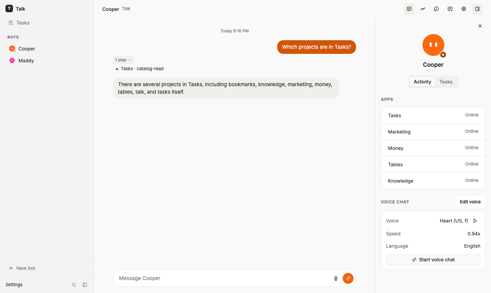
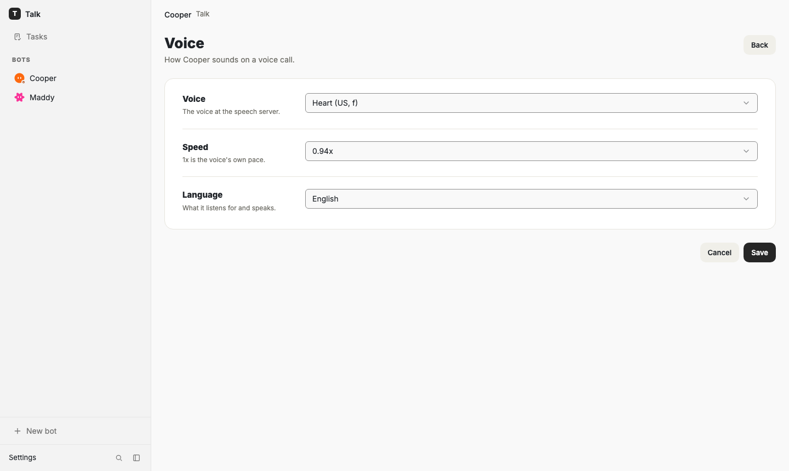
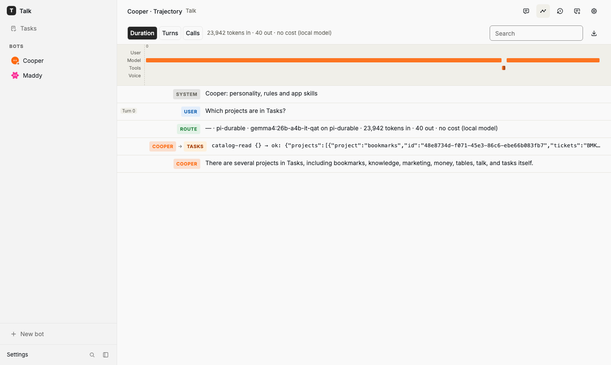
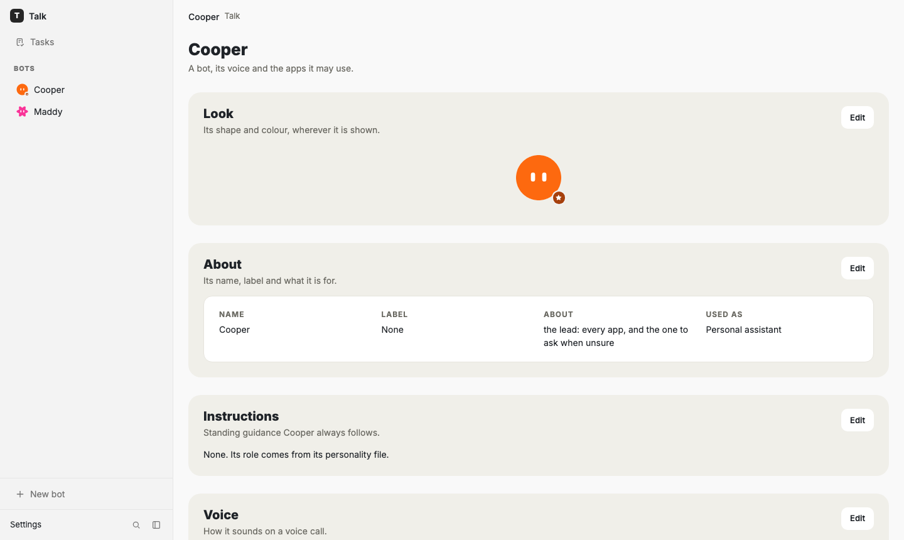

Talk is where you talk to your bots. Each bot has a role, a voice and the apps it may use. Ask a question and it looks the answer up in your apps. Ask for a change and it makes it, and it asks you first before anything that deletes, archives, sends or pays.
Talk uses a handful of words with one meaning each. They appear on the page, in the bots' answers and in this guide.
Your bots are in the sidebar. The main bot is first, with a star; the others follow, the most recent first. A dot means a bot is working, and a mark means it has something new or is waiting for you.
Pick a bot to open its chat. Your messages are in the bot's colour on the right; its answers are on the left. The details panel on the right shows the apps it can use, whether each is online, and its voice. The icons at the top switch between the chat and its Trajectory, open earlier conversations, start a new one, open the bot's settings, and hide the details.

Each message you send starts a turn. While the bot works, a line under your message says what it is doing and for how long. You can press Stop at any time.
Each thing the bot does in an app is a step, shown above its answer. A step is a lookup, which only reads, or a change. When a step returns something worth showing, such as a list of tickets or what a change did, it is shown as a card in the chat.
Find tickets, list accounts, read a page from the web.
Add a comment, move a ticket. The app sees which bot made it.
Delete, archive, send, pay. A card asks you first.
data/writes.enabled exists. Without it, a change is refused and the bot says so.When a bot wants to delete, archive, send or pay, it stops and shows a card with what it is about to do. Allow runs it. Don't allow, or anything else you say, stops the run, and what you said becomes the next turn. The thing it changes must be one a lookup has just shown, so the bot cannot act on something it guessed.
A bot can hand part of a job to another bot. The other bot works in its own conversation, with only the apps it may use, and its answer comes back to the bot you asked. You can mention a bot by name, as in "ask Maddy", or let the bot decide.
Press the wave button in the message box, or Start voice chat in the details, to start a voice call. A bar above the message box shows the call: who is speaking, how long it has run, and the last thing said. What you say on a call lands in the chat like a typed message.
To type with your voice instead, hold the microphone button and speak, or tap it to start and tap again to stop. This is dictation: the words go into the message box for you to send.

The Trajectory shows a chat as a timeline and a list of steps: what you said, how the model was asked, each lookup and change, and each answer. The strip at the top has a lane each for hearing you, the model, the apps and the voice. Click a bar or a row to see it in full.
From a step you can Make test, which saves the turn as a test case, or Clear the turn, which hides it from the chat, exports and tests. The download button saves the whole chat as a log.

New bot at the bottom of the sidebar makes one: a name, a shape and a colour. A bot's settings page shows its look, what it is for, its instructions, its voice and the skills it reads. Each part has its own Edit, which opens a page with Back, Cancel and Save.
Tasks in the sidebar lists what each bot is working on, and every change waiting for your yes.

Talk runs on your machine with a local model and local speech, so nothing leaves the machine unless you choose a hosted voice. It needs Node 22.19 or later, Ollama with the model, and for voice a speech server with Whisper and Kokoro.
npm install
npm run build:page
npm start # http://127.0.0.1:3930
| Setting | What it does |
|---|---|
TALK_PORT | The port, 3930 unless set |
TALK_DATA | Where the chats are saved |
TALK_APPS_FILE | The apps your bots may use |
TALK_MODEL | The model on Ollama |
TALK_TTS | The voice: Kokoro, xAI or ElevenLabs |
The answers to what people ask most. Open any of them.